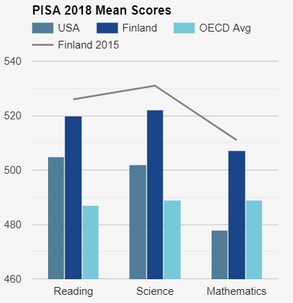

We believe that sustainability begins with our citizen’s health. To promote good health and wellbeing, as soon as a student starts school they begin to learn about how to properly fuel themselves. Our researchers have found that the world's healthiest countries have average diets that consist of lots of fruits and veggies, limited added sugars, healthy grains, and are generally vegetarian or pescatarian (Tu, 2001) (American Heart Association, 2020). Part of our childhood education system is educating students on why these diets are effective as well as encouraging students to be mindful of their own diets. We also put this into action by encouraging students to volunteer in the community gardens. In addition, we have healthy and free school lunches to those who want it, and vending machines with healthy snacks and no soda.
Every student is able to attend school cost-free to make sure that everyone is able to obtain an education. Education is a right that every person inside of our city needs to have. Because we have a free education system, we lessen the inequality between people and give everyone the same opportunities.
All schools in the city are public in order to lessen the competition between schools to be the best and rather focus on teaching the students to the best of their ability. Also, there are no private schools in order to make schools seem less like a business and to not let anyone get advantages just because of economic status. Finland has one of the best school systems in the world and they do exactly this; all their schools are solely focused on making the best experience for the student they do not worry about any rankings (NCEE, 2019). Finland is a school system that is really looked up to (NCEE, n.d.) because of the success that its system has shown from the PISA scores, an international exam, (Figure 1), and the way they are taught was thought to be unsuccessful.
Figure 1. This is the average PISA scores from each of the sections in 2018 from the USA, Finland, and the OECD, the organization that runs the PISA.
Our schools focus on giving out quality homework that really helps to guide students on the right path about a subject and not so much on the quantity. The quantity has to stay small in order to have more quality homework for students to do. Focusing on the quality of homework will likely lessen the amount, allowing students to have the time they need to discover and explore the world around them, or to inquire about a topic they are really interested in. A big focus of our system is to allow children to discover the things they enjoy early on in order for them to have plenty of time to learn more about it or change topics. This also leads to our citizens having a happier life because they are able to choose something they are passionate about as a career rather than picking something random.
In order to encourage students to keep up with the topic of the classroom, there are no multiple-choice exams in our schools, making it harder for people to guess some answers and get it right. Finland also does this and they have also been encouraging students to participate in self-assessment to make them more responsible for their learning (NCEE, 2019). Self-Assessment is not something we would like to instantly focus on. However, it is something that would be ideal as the city develops.
Our schools work towards having students truly interested in the topic rather than focusing on their ability to regurgitate information the schools teach them. In order to do this we focus a lot on interactive classroom activities that the students can work on as well as a learning environment in which the students collaborate in order to understand a topic fully. We encourage hands-on learning because this type of teaching has shown success in Finland (NCEE, 2019). We also encourage small class sizes in order to better the relationship between students and teachers to better the support that students get from school.
Our school system has a good amount of breaks during the year because it can become exhausting at times. Since we do encourage critical thinking there are certain activities that keep the students thinking during their breaks. Our school years are also not year-round to make sure that students have plenty of time to pursue the topics they really enjoy.